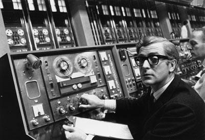

Early Protocols Used in Internet
In this section we are talking about the central systems and protocols that make the Internet run - and I'm going to try and do this without sounding too technical! So wish me luck!
The Internet base protocols and systems were mainly devised in the 1970s and 1980s. Many were established initially as a means to connect mainframe computer systems for timesharing purposes. The system introduced for this fairly trivial purpose has expanded to become a global multimedia information and communications system, connecting PCs, phones, and tens of millions rather than the few devices foreseen by the original inventors.
Parts of the system are now over 20 years old, and the Internet is required to perform a number of important functions not included in the original design. Various patches have been applied to base protocols and systems, not always evenly. How well does it perform these tasks? Well that's a matter of some debate, and we may need another series of tapes to examine those issues. But for now lets look at the core systems and how they evolved.
And we should start with the mother of all systems, the world's largest database, the Domain Name System or DNS.
Each host on the Internet has a range of IP (or Internet protocol) numbers. The Domain name system (DNS) maps the numbers to names of hosts or websites (eg www.google.com, www.hotmail.com). Thus, when a user enters a name, the Internet knows which number to send the query to by looking up the DNS database.
The DNS was introduced in 1984, several years before commercial traffic was able to be part of the Internet.
See more in: NetHistory
Home